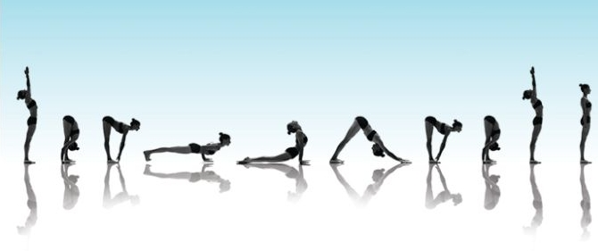

Le YOGA-VINYASA est issu du yoga Ashtanga, qui consiste à exécuter une série de postures dans un ordre bien précis. À la différence de l'Ashtanga, le YOGA-VINYASA est plus libre et plus créatif. Les éléments de la pratique du VINYASA-YOGA: ASANA – les postures sont la base de Vinyasa-yoga, comme et des autres style de Yoga. UJAYI – "la respiration victorieuse, la respiration de l'océan". Un type de Pranayama avec le son qu'on crée en contractant légèrement les muscles de la gorge. VINYASAS - sont des mouvements qui relient les asanas en un seul flux. BANDHAS – «les verrous». Tous les trois: MULA Bandha (le verrou de la racine ), UDIYANA Bandha (le verrou dans le domaine de l'estomac) et JALANDHARA Bandha (le verrou de la gorge). LES BIENFAITS : Développe le corps: renforce tous les groupes musculaires, rend le corps souple et élastique, et surtout, entretient forme physique. Nettoie le corps , élimine les toxines et sur le plan énergétiques - enlève les blocs dans les canaux énergétique ( les Nadi), le long desquels circule l'énergie vitale (le Prana). La respiration UJAYI calme le système nerveux et l'esprit. Élimine l'insomnie et d'autres troubles du système nerveux. Apporte un sentiment de paix, et de contentement . Les Verrous aident à stimuler le fonctionnement des organes internes et de réorganiser le corps. Par exemple,MULABANDHA est efficace pour les maladies psychosomatiques et dégénératives. UDIYANA BANDHA est une sorte de massage des organes internes, stimule la fonction du pancréas, du foie, rééquilibre les glandes surrénales et donne de la force à tous les organes internes.
Bienvenue aux cours de O'YOGA.
1 Rue du Général Leclerc, 67210 Obernai, France.
Tel. 07 85 33 59 30
E-mail alena.habibi@gmail.com